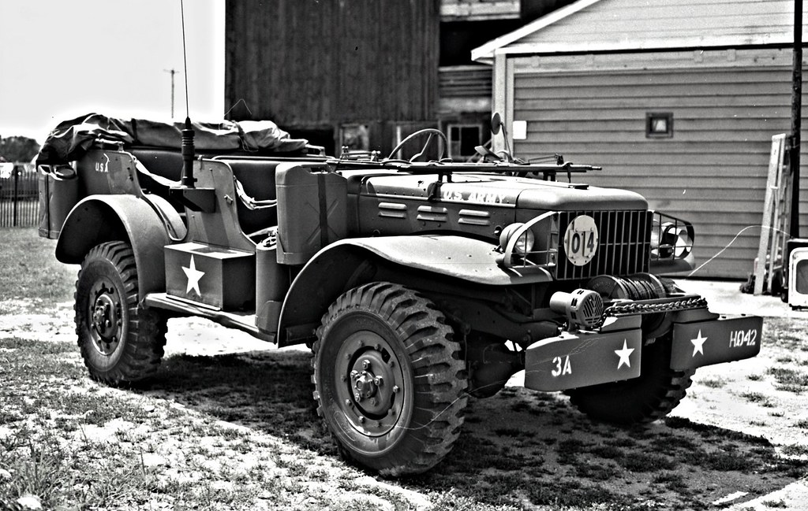
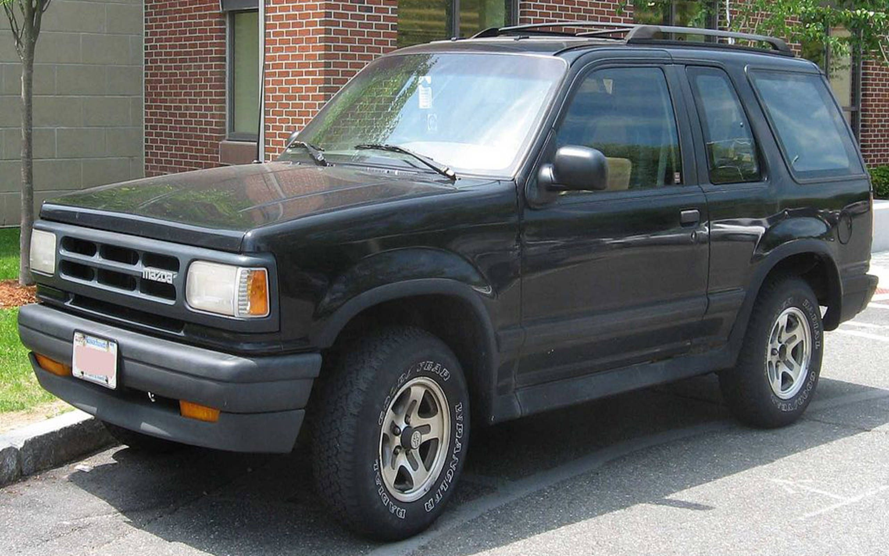
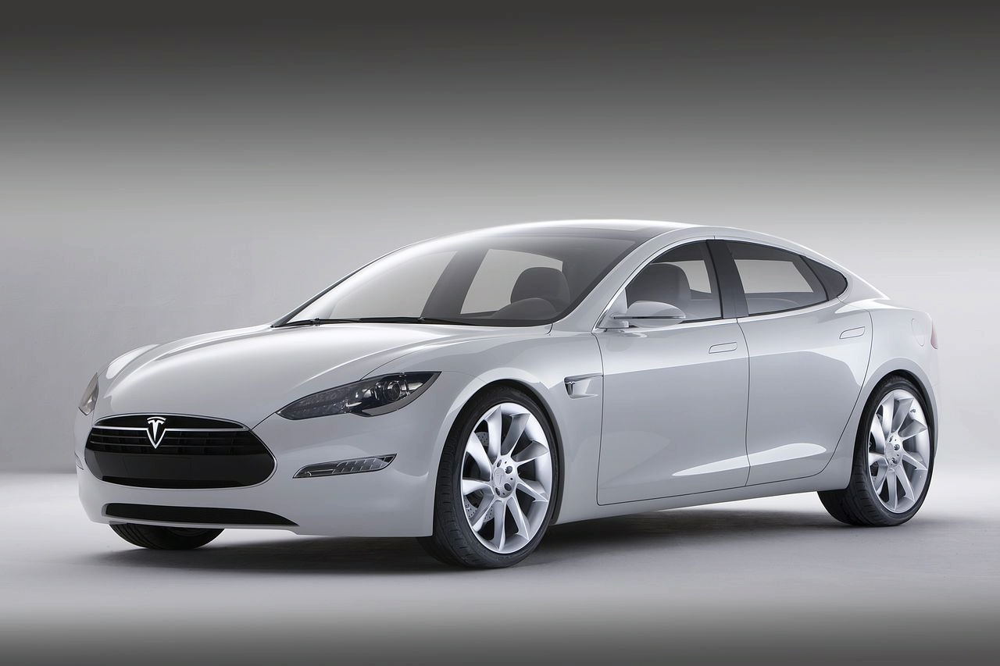

1900-1920

The Beginning
Birth of mass-produced cars with Ford.
1914–1945

War & Industry
Auto plants become war machines, reshaping America.
1950s

Golden Age
Iconic designs and the rise of car culture.
1970s

Oil Crisis
Gas shortages and environmental awareness rise.
1990s–2000s

Globalization
Rise of SUVs and identity through cars.
2010s–2020s

Green Revolution
Electric vehicles reshape the industry.